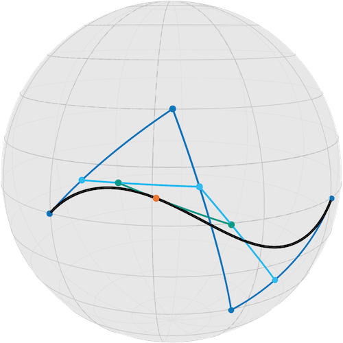
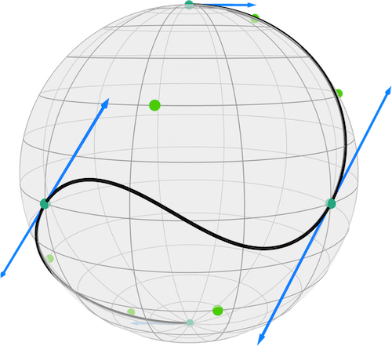
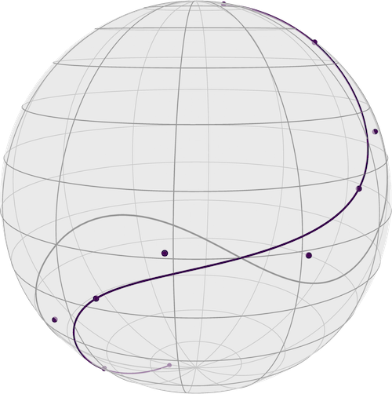

Minimizing the Acceleration of Bézier Curves on the Sphere
Ronny Bergmann 2023-06-06
using Manifolds, Manopt, ManoptExamplesIntroduction
Bézier Curves can be generalized to manifolds by generalizing the de Casteljau algorithm 📖 to work with geodesics instead of straight lines. An implementation in just a few lines as we demonstrated in [ABBR23] as
function bezier(M::AbstractManifold, t, pts::NTuple)
p = bezier(M, t, pts[1:(end - 1)])
q = bezier(M, t, pts[2:end])
return shortest_geodesic(M, p, q, t)
end
function bezier(M::AbstractManifold, t, pts::NTuple{2})
return shortest_geodesic(M, pts[1], pts[2], t)
endwhich is also available within this package as de_Casteljau using a simple BezierSegment struct to make it easier to also discuss the case where we compose a set of segments into a composite Bézier course.
In the following we will need the following packages and functions. They are documented in the section on Bezier Curves and were derived in [BG18] based on [PN07].
using ManoptExamples:
artificial_S2_composite_Bezier_curve,
BezierSegment,
de_Casteljau,
get_Bezier_degrees,
get_Bezier_inner_points,
get_Bezier_junctions,
get_Bezier_junction_tangent_vectors,
get_Bezier_points,
get_Bezier_segments,
grad_L2_acceleration_Bezier,
L2_acceleration_BezierThis notebook reproduces the example form Section 5.2 in [BG18].
The following image illustrates how the de-Casteljau algorithm works for one segment.

Approximating data by a curve with minimal accelartion
We first load our example data
M = Sphere(2)
B = artificial_S2_composite_Bezier_curve()
data_points = get_Bezier_junctions(M, B)Which is the following cure, which clearly starts and ends slower than its speed in the middle, which can be seen by the increasing length of the gangent vectors in the middle.

We continue to recude the points, since we “know” sme points due to the $C^1$ property: the second to last control point of the first segment $b_{0,2}$, the joint junction point connecting both segments $b_{0,3}=b_{1,0}$ and the second control point $b_{1,1}$ of the second segment have to line in the tangent space of the joint junction point. Hence we only have to store one of the control points.
We can use this reduced form as the variable to optimize and the one from the data as our initial point.
pB = get_Bezier_points(M, B, :differentiable)
N = PowerManifold(M, NestedPowerRepresentation(), length(pB))PowerManifold(Sphere(2, ℝ), NestedPowerRepresentation(), 8)And we further define the acceleration of the curve as our cost function, where we discretize the acceleration at a certain set of points and set the $λ=10$
curve_samples = [range(0, 3; length=101)...] # sample curve for the gradient
λ = 10.0
function f(M, pB)
return L2_acceleration_Bezier(
M.manifold, pB, get_Bezier_degrees(M.manifold, B), curve_samples, λ, data_points
)
end
function grad_f(M, pB)
return grad_L2_acceleration_Bezier(
M.manifold, pB, get_Bezier_degrees(M.manifold, B), curve_samples, λ, data_points
)
endgrad_f (generic function with 1 method)Then we can optimize
x0 = pB
pB_opt = gradient_descent(
N,
f,
grad_f,
x0;
stepsize=ArmijoLinesearch(N;
initial_stepsize=1.0,
retraction_method=ExponentialRetraction(),
contraction_factor=0.5,
sufficient_decrease=0.001,
),
stopping_criterion=StopWhenChangeLess(1e-5) |
StopWhenGradientNormLess(1e-7) |
StopAfterIteration(300),
debug=[
:Iteration,
" | ",
:Cost,
" | ",
DebugGradientNorm(),
" | ",
DebugStepsize(),
" | ",
:Change,
"\n",
25,
:Stop,
],
);Initial | f(x): 10.647244 | | |
# 25 | f(x): 2.667564 | |grad f(p)|:0.890845571434862 | s:0.01326670131422904 | Last Change: 0.763281
# 50 | f(x): 2.650064 | |grad f(p)|:0.05536989605165708 | s:0.05306680525691616 | Last Change: 0.081780
# 75 | f(x): 2.649707 | |grad f(p)|:0.02135638585837997 | s:0.01326670131422904 | Last Change: 0.011590
# 100 | f(x): 2.649700 | |grad f(p)|:0.0012887575647752057 | s:0.05306680525691616 | Last Change: 0.001745
The algorithm performed a step with a change (2.9063044690733034e-7) less than 1.0e-5.And we can again look at the result
The result looks as

where all control points are evenly spaced and we hence have less acceleration as the final cost compared to the initial one indicates. Note that the cost is not zero, since we always have a tradeoff between approximating the initial junctinons (data points) and minimizing the acceleration.
- [ABBR23]
- S. D. Axen, M. Baran, R. Bergmann and K. Rzecki. Manifolds.jl: An Extensible Julia Framework for Data Analysis on Manifolds. ACM Transactions on Mathematical Software (2023), arXiv:2021.08777.
- [BG18]
- R. Bergmann and P.-Y. Gousenbourger. A variational model for data fitting on manifolds by minimizing the acceleration of a Bézier curve. Frontiers in Applied Mathematics and Statistics 4 (2018), arXiv:1807.10090.
- [PN07]
- T. Popiel and L. Noakes. Bézier curves and $C^2$ interpolation in Riemannian manifolds. Journal of Approximation Theory 148, 111–127 (2007).